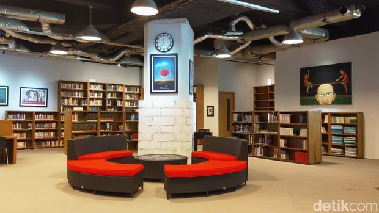

Perpustakaan Freedom berdiri di bawah naungan Freedom Institute dan pada awal tahun 2002 resmi dibuka untuk umum. Keberadaan perpustakaan
sebelumnya hanya digunakan untuk kepentingan yayasan, jumlah bukunya pun tak banyak sekitar 4.000 buku saja milik Rizal Malarangeng
yang juga pemilik perpustakaan. Saat ini koleksi bukunya terbilang lengkap, mulai dari novel, sastra, hingga filsafat bisa kamu temui.
Tak hanya berbahasa Indonesia yang berbahasa Inggris juga tersedia. Perpustakaan yang sudah ada sejak tahun 2001 ini memiliki koleksi
buku lengkap buat anak sekolah hingga mahasiswa. Buku-buku yang ada pun selalu diperbaharui setiap tahunnya namun tidak menghilangkan
buku-buku kuno yang bersejarah.
Beberapa buku yang ada di perpustakaan ini yaitu buku politik, sejarah, sastra, sains, filsafat
dan masih banyak lagi. Namun buku-buku mengenai desain belum tersedia di sini. Awalnya pada tahun 2001, Freedom Instititute hanya
memiliki 4000 buku yang dimiliki oleh pemilik perpustakaan ini, Rizal Mallarangeng. Sekarang, di perpustakaan sudah ada sekitar 14.000
buku.
Pengunjung yang datang pun banyak, namun memang masih banyak orang yang belum tahu keberadaan Freedom Institute di dalam
Wisma Bakrie. Dalam sehari, pengunjung yang datang mencapai 40 orang. Untuk jadi member, tidak dipungut biaya. Traveler hanya perlu
menunjukkan KTP untuk kelengkapan data, dan hari itu juga kartu anggota dapat dibawa pulang. Di Perpustakaan Freedom menggunakan sistem
layanan terbuka. Dengan sistem ini para pengunjung dapat langsung mencari informasi sesuai dengan kebutuhan mereka tanpa harus mendatangi
petugas terlebih dahulu. Sistem ini digunakan agar para pengguna dapat dengan leluasa mencari sendiri, serta dapat mencari rujukan
lain yang berkaitan.
| Jenis Fasilitas | Keterangan |
|---|---|
| Meja & Kursi Partisi | jika kamu sedang membutuhkan privasi, terdapat meja partisi lengkap dengan stop kontak untuk mengisi ulang baterai ponsel atau laptop. Cocok untuk mengerjakan tugas dengan tenang. |
| Sofa Empuk | Tersedia pula sofa empuk yang bisa kamu gunakan saat membaca buku. Sofa hitam ini hanya tersedia dua, di sisi pojok ruangan dan satu lagi dekat dengan tembok tengah perpustakaan. Jika ingin fokus membaca buku dengan nyaman, sofa ini bisa pilihan untuk kamu. |
| Layanan Fotokopi | Karena tidak bisa meminjam buku, perpustakaan ini menyediakan layanan fotokopi. Kamu bisa fotokopi halaman buku tertentu ataupun satu buku sekaligus. Biaya yang dikenakan per lembar adalah sebesar Rp175,00. Lalu, perpustakaan ini juga punya fasilitas meeting room yang bisa digunakan untuk umum, dengan syarat harus konfirmasi kepada pihak perpustakaan terlebih dahulu. |
| Komputer untuk Layanan Opac | Jenis katalog yang digunakan Perpustakaan Freedom Institute adalah katalog online OPAC. OPAC yang digunakan di Perpustakaan Freedom Institute menggunakan software Freelib yang di buat dan dikembangkan sendiri oleh Perpustakaan Freedom Institute. |
Perpustakaan Freedom Institute hanya terletak di lantai 1, yang dimana perpustakaan tersebut berada di dalam gedung Wisma Bakrie.
Berikut video mengenai tour Perpustakaan Freedom Institute